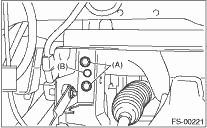

1. Temporarily tighten the two bolts used to secure the transverse link to the body.
NOTE:
These bolts securing the bushings are tightened to a point where they can still move back and forth in the oblong shaped hole in the bracket.
2. Install the bolts which connect the transverse link to the crossmember, and temporarily tighten with a new self-locking nut.
3. Insert the ball joint into housing.
4. Connect the stabilizer link to the transverse link, and temporarily tighten the new self-locking nuts.

5. Attach the front vehicle height sensor bracket to the front cross member using bolt (A) and clip (B). (HID model, right side only)

Tightening torque:
7.5 N·m (0.8 kgf-m, 5.5 ft-lb)
6. Attach the front vehicle height sensor bracket to the front transverse link. (HID model, right side only)

Tightening torque:
7.5 N·m (0.8 kgf-m, 5.5 ft-lb)
7. Connect the connector to the front vehicle height sensor. (HID model, right side only)
8. Install the front wheels.
9. Tighten the following points in the order shown below when the wheels are in full contact with the ground and vehicle is at curb weight (empty).
(1) Between transverse link and stabilizer
Tightening torque:
45 N·m (4.6 kgf-m, 33 ft-lb)
(2) Between transverse link and crossmember
Tightening torque:
125 N·m (12.7 kgf-m, 92.3 ft-lb)
(3) Between transverse link rear bushing and body
Tightening torque:
250 N·m (25.5 kgf-m, 184 ft-lb)
10. Install the sub frame. 
11. Connect the battery ground cable to the battery.
12. Inspect the wheel alignment and adjust if necessary.
13. Re-initialize the auto headlight beam leveler system. (Model with HID)